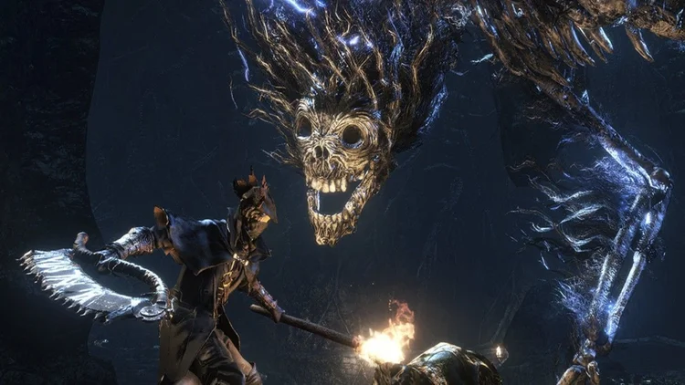
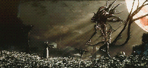

A Lore
Chegamos a Yarnham em busca de uma cura para a nossa própia doença, doença essa que transforma os homens em bestas sedentas por sangue. Durante a exploração descobrimos a história dos Pthumerianos, estes foram responsaveis por todo o horror que assombra esse mundo, ao longo da história conhecemos outros caçadores com suas própias histórias e aflições. Entre diálogos e lutas incriveis percebemos que os monstros que enfrentamos são apenas vitimas desse mundo destruido.
DLC The Old Hunters
A DLC traz um aumento consideravel na dificuldade do game, as melhores bossfights estão aqui. A história se passa após os eventos finais do game, nos tornamos o novo "Antigo caçador" e agora vamos atrás dos antigos caçadores, estes presos em um mundo de pesadelos